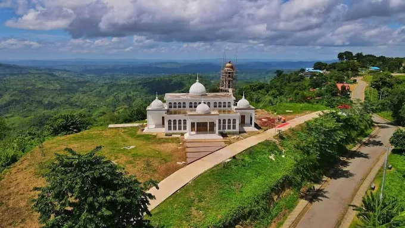
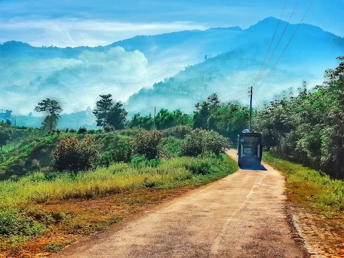
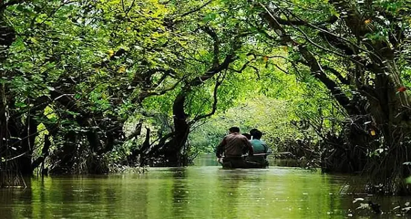

Most View Spot
Cox's Bazar
Cox’s Bazar is a town on the southeast coast of Bangladesh. It’s known for its very long, sandy beachfront, stretching from Sea Beach in the north to Kolatoli Beach in the south. Aggameda Khyang monastery is home to bronze statues and centuries-old Buddhist manuscripts. South of town, the tropical rainforest of Himchari National Park has waterfalls and many birds. North, sea turtles breed on nearby Sonadia Island.
Sajek

Sajek Valley is a popular tourist spot in Bangladesh, situated among the hills of the Kasalong range of mountains in the northern area of the Chittagong Hill Tracts. Referred to as the "Queen of Hills and the "Roof of Rangamati", the valley is known for its greenery and dense forests, situated at an elevation of 1,800 feet (550 m) above sea level.
Bandarban

Bandarban Hill District is the remotest and least populated district in Bangladesh. The lure of the tallest peaks of Bangladesh, treks through virgin forests and chance to meet more than 15 tribes of the region up close is growing both among Bangladeshis and tourists from other countries.
Sylhet

Sylhet is a city in eastern Bangladesh, on the Surma River. It’s known for its Sufi shrines, like the ornate tomb and mosque of 14th-century saint Hazrat Shah Jalal, now a major pilgrimage site near Dargah Gate. The tiny Museum of Rajas contains belongings of the local folk poet Hasan Raja. A 3-domed gateway stands at the 17th-century Shahi Eidgah, a huge open-air hilltop mosque built by Emperor Aurangzeb.